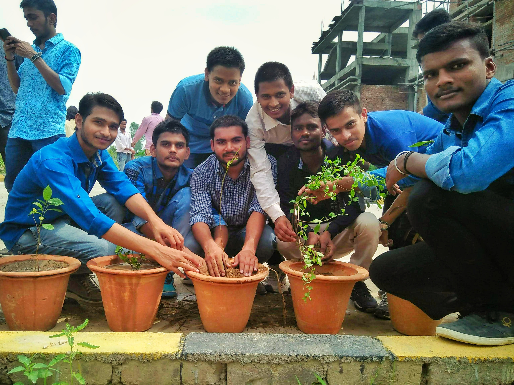
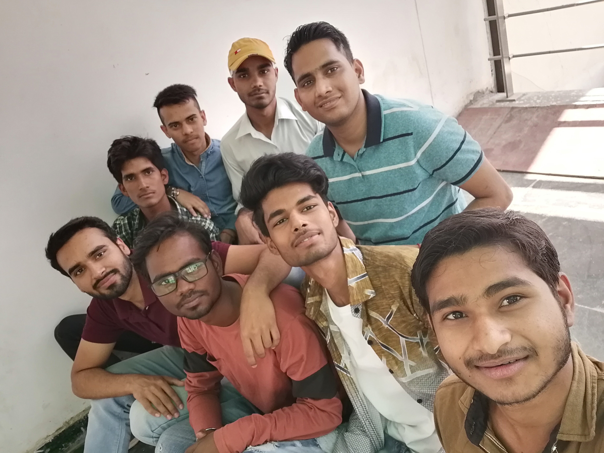

We were called for the registration of third semester. In that semester, we had 6 subjects instead of 5 like last semester. We came two days before that day, to clean and set up our new room. Me and Prateek clean the room, go outside for the lunch and then in the evening Prateek went to Kanpur for some work. Saurabh texted me to meet in that evening. He was at his room which was about 100 meters from my room. We met after two months so talk about our vacation and then at night we went out for dinner at Shukla Restaurant.
In those summers, my dad bought a Laptop💻 for me. It was and is my first laptop. It is of HP company, have 1Tb space, 4 Gb Ram, 2Gb graphics card and intel i3 7th gen Octacore processor. After that I started learning programming and web development.
25 Jul 2018, Wednesday
When I was sitting outside my room, I saw Satyam Singh there, I was surprising. Satyam, Shiv Shakti, Neeraj, Sujeet, Vivekanand, Amit & Prasann were residing in the house in front of ours and I didn’t know about that. I went to his room and met all of them and did gossip for few hours. We were glad because, we were neighbours in hostel also and there also. Rajat Sir had started tiffin service so we started taking tiffin from him. We all eight were taking tiffin from him. Students used to call him RTW in jest. He fixed the price of tiffin ₹2,200 per month. It was not too much, and in starting the food quality was very good. But after some days the quality started declining. So we stop receiving tiffin from him.
01 Aug 2018, Wednesday
Our regular class for odd semester stared that day. Some lateral entry student joined us in that semester, who had done their diploma (Polytechnic). There were 6 subjects in that semester but in I&II semester there were only 5 subjects. The subjects were- “Digital Logic Design, Signals & Systems, Electronic Devices & Circuits, Mathematics -III, Network Analysis and Synthesis, Universal Human Values & Professional Ethics”. We were introduced to our most loved teacher that day. He is Rajeev Sir. Rajeev sir had chosen ‘Signal & Systems’ subject to teach us. On that day, he took introduction of every student, and asked what they wanted to become in future. According to me, Rajeev Sir is the most knowledgeable, talented, smartest and most loved teacher of Electronics department. He is also my favourite teacher. Rajeev sir usually told us about his college life and his experiences, which is most interesting part of his lecture, which motivates us to do something big in our life.
15 Aug 2018, Wednesday

It was my first Independence Day celebration at college because in first year I joined college after Independence Day. It was also my sister’s birthday. Director Ma’am hosted the flag and we all sang National Anthem together. On that day we also met our juniors, who were performing on some patriotic songs. There was also a plantation event after Independence Day celebration. Our Director Ma’am and all teachers inaugurated the event, me and all my friends started plantation. We did plant many flower plants, decorative plants and many more. It was fun for us and we enjoyed it well. We also took some pictures with the plants for our college photo gallery.
30 Aug 2018, Thursday
We had one subject named ‘Digital Logic Design’ which was taught by our HOD sir Arun Kumar Singh. Many of students didn’t like his teaching but I liked. When he started teaching, he took two-three lectures continuously in a day. He also told us to join the ‘NPTEL lectures for Digital Design’. He used its questions for our assignment. I had registered in NPTEL so I answered his questions first in the class that’s why he was always looking at me. My friend (Shiv Kumar) was afraid of him, so he would ask that I should sit away from him.
There was no playground for Badminton outside the campus. If I wanted to play then I had to go college. So I decided to play Football for time pass and I bought a football boot from Amazon. It is of black colour. I didn’t play Football in school times. First day when I went to play I met some juniors. The two of them played very well, they were Shivam Yadav & Aryan Dixit. They both are of civil branch.
13 Sept 2018, Thursday
It was my birthday that day 🎂. It was my 2nd birthday outside my home and without parents. Early in the morning my Maa and Papa phone called me to wish my birthday and also gave blessings. I got best wishes from family members, relatives and many friends. At night, my friends brought cake and I cut it and they gave me a small party. Some of my friends also have birthday near mine. Satya Prakash & Shiv Shakti have birthday on 20th August, Satyam Singh have birthday on 15th September, Shiv Kumar have on 30th September, my roommate (Prateek) have on 1st October and Aditya Verma have on 8th October. We celebrated many birthday parties during month of September & October.
29 Sept 2018, Saturday
There were only 4 classes that day and we all were free after lunch break. We all football friends went to play football. Seniors and juniors also had come there at DN college ground. After sometime, when we had started playing, drilling started. Then we stopped the game for some time and hide beneath a tree but the rain was being heavier and heavier. The ground was filled with water and we were also drenched. So we decided to enjoy the game in the watered ground. We played there Rugby until it was dark. We took football in our hand and run till next goalpost to shot the goal. When someone got caught by opposite team, we would jump over them to grab the ball. We enjoyed very much that day and after arriving home we took a bath.
12 Oct 2018, Friday
That day was very busy day, our classes ended at 3 pm and then we had gone to make some affidavits for our scholarship form. Scholarship form and all the documents had to submit at college on next day. I went to Tehsil for that and also make affidavits for some of my friends. Prateek had gone to Kanpur for some work so I had to do his work also. I went to photocopy shop and make print out of every documents and arrange them according to the college’s required manner.
One more thing happened that day; the preparation for our Techno-Cultural Fest was started. Which was schedule between 01-03 November. There were many events in that fest from coding to Math Mania and many sports and games. We had to register in it from a website made by our seniors named ‘Abhyutthan.org’. Abhyutthan 2k18 was name of our fest. The website was made by our seniors specially Abhishek Sirohi Sir. That time also there was T-shirt for the fest which was of two colours only black and grey. I had bought grey coloured t-shirt.
28 Oct 2018, Sunday
Some day before that day I came back from home after vacation of Durga Pooja and Dussehra. On that day there was examination of NPTEL ‘Digital Design’. It was an online exam, I got exam centre at iON digital zone at Hathipur in Kanpur. Some of my classmates also had exam centre there. We decided to go there together. On that day morning, I, Amit Kumar, Suhail Iqbal & Pragya Yadav took bus in the morning and reach there. Our exam was from 2:00 pm to 4:30 pm in the evening. We reached at exam centre 2 hours before examination. Exam was not very good I got only 69% because I had not read whole syllabus due to lack of time and also it was not taught at college. After exam ended we ate some food at street hotel. We went back room at about 8pm. There was also a birthday party of Abhishek Patel that day. Actually, His birthday is on 10th July but at that date we were at our home for vacations so decided to celebrate on that day.
01 Nov 2018, Thursday
It was the first day of our college fest. During day time there were many events like Math Mania and other technical events. And in the evening it was the Fresher’s Night. Many Fresher students / juniors had performed that night; we had met many of our junior and get introduced to them. After party event new Mr. and Miss. Fresher were announced. Aryan had grabbed the Mr. Fresher award. After dinner in the party, there was a rock band performance, who were from Kanpur, they enjoyed us very much. The party ended at about 12:00 am at midnight. One of my friends Vivekanand found bike from his friend, he brought us to our room one by one. He had to come 4 times form College to Tirwa because we were nine persons.
02 Nov 2018, Friday
It was 2nd day of our techno-cultural fest. We were slept after 2:00 am at last night and also woke up early before 5 am in the morning. We had to reach college that day before 6 O’clock because that day there was Futsal event of my friends from 6:00 am and also many events. I had participated in Futsal and Quiz. I lost Futsal match to my friend Satyam, Shiv Shakti & Sujeet’s team, but I qualified for the final round of Quiz. In the evening there was Poet conference (Kavi Sammelan) and chief guest was our University’s VC Vinay Pathak Sir. That day also event ended late night. We went back to our room, I and my friends were talking about the day and It was 2 AM at night when we slept. I had to go college early next day because there was quiz championship.
03 Nov 2018, Saturday
That day was the third and last day of our fest, it was also one of the most horrible days of my life. For my Quiz championship, I partnered with Abhishek Singh, Prabhat Kumar & Mayank Sir. We finished at runner-up. We were at first position till last question but there was a confusion between us at that question which downgraded us to 2nd position. Prateek’s team became winner in Math Mania.
I was feeling tired because I had not taken a full sleep from two days. So I decided to go at room to take rest but Saurabh texted me to come his room for a work. I went to his room. I didn’t get sleep again. My tiffin was cancelled that day so after work I, Prateek & Saurabh Kushwaha went to eat Pizza at Happiness Bakery. There was EDM Party that night we were talking about that there. We went college together with well dressed up for the final day of the fest.
At night, all events had been completed; Prizes of some events had been distributed. We were enjoying EDM night, everything was going well but then we got saddest news of the day. Ashwini sir announced that some of our college friend’s got injured in an accident. Their scooty was crashed down by a truck. EDM had been stopped, everyone was astonished. There were 4 students riding that scooty. They were Saurabh Kushwaha, Priyanshu, Faisal and Aryan. Then we got information that two of them were died and two were at hospital. Priyanshu and Faisal were died on the spot of accident. I was shocked about, “what happened to them. Few minutes ago, Saurabh was with me and Faisal got Mr. Abhyutthan Award.
After that accident students started protests for building hostels, for college buses to bring them from outside, and many more demands. The students protested whole night at college ground. I didn’t sleep for a minute that night. In the morning, Police came and forcefully removed the students outside of college.
04 Nov 2018, Sunday
There was our Diwali vacation starting from that day. I was so much scared and shocked from last night accident, I wanted to go home as soon as possible, but I had not reservations in any train. I, Prateek and Tahsin Khan took bus to Lucknow. After Lucknow, Prateek had taken bus to Azamgarh and we took the bus to Ballia. “I had not slept properly since three nights but I was unable to sleep”. I was thinking about accident, Saurabh (With whom I had eaten Pizza few hours ago), Priyanshu (who was star cricketer of CIVIL branch, and always happy when he met me) and two others. Tahsin also had not slept in the bus. I was so much scared. Bus reached Ballia at 03:30 am on next day, I stayed at Tahsin’s home till morning and then I went to my home.
21 Nov 2018, Wednesday
Our vacation had ended on 12th November, but I didn’t go college. I want to recover from that scary thing. I went to Mausi’s home for Chhath Pooja. After becoming normal, I had come college on that day (21 November). Our 2nd class test was near so I asked Shiv Kumar about my missed classes and took his notes to copy. Our CT2 was between 26-29 November. There was very little time left in our examination and I had to prepare for a lot lessons. I completed my learning and chapters in hurry and gave exams.
29 Nov 2018, Thursday
Our class tests had been ended that day. A movie named 2.0 (Robot 2) was released that day. It was the second part of the super hit movie of superstar Rajnikant. All of my friends had decided to watch the film. They were requesting me to go with them. I asked my mom to go there and she agreed to go safely. We had decided to watch night show. The theatre was situated near Gandhi Chauraha at Tirwaganj. We went there at 10:00 pm. There were no local audience at theatre. There were only our colleagues, seniors and juniors there. We watched the show and reached home at 1:00 am midnight. Then I messaged at my dad’s phone that I had reached home safely
12 to 25 Dec 2018
Our CT2 exam ended well and it was time for end semester exams. Our ‘Signals & Systems’ was the toughest exam for me till that time. I was supposing to get only 35/70 marks. As I was very shocked from the accident in our college so I was unable to concentrate in my study so some exams did not ended well. That is why; I could not finish my syllabus. Our result will be declared in few days.
29 Dec 2018, Saturday
Theory exams were over and we are waiting for our practical exams and New Year. On that day our practical exam dates were declared, which was from 4th January. We were happy that we could celebrate New Year without any exam tension.
04 January 2019, Friday

It was our practical exam of ‘Digital Logic Design’, we were present at college, but the examiner had not come in time. We were talking here and there. Few days ago, Abhishek Patel had made a WhatsApp group for his roommates named “जय भवान ”🚩. He wanted to expand his group so he added me and Shiv Kumar. We were still friends but there was no name of our group. Since then our group of friends has been named Jai Bhavani, and I became the official member of ‘जय भवानी’. The members of Jai Bhavani group are “Shiv Kumar, Abhishek Patel, Prince Kumar Gupta, Parimal Srivastava, Umar Singh, Aditya Verma, Abhishek Singh, Abhishek Sharma, Kamendra Kumar, Sagar Maurya, Shubham Rajput, Anoop Kumar & Me”. We have put a protocol or a list of rules to be in the group. The rules are crazy, unique and very funny. I can not share those rules but those are very funny and spiny. Now (10 April 2021), our Jai Bhavani group is available at Instagram, Face book, Telegram, Signal and GIMS (Sandes) also.
08 Jan 2019, Tuesday
It was last day of our practical exam. Exam ended at 6:00 pm in the evening. I was alone at room because Prateek’s exam was ended before so he moved to home with his classmates. After reaching at room, I packed my bags and move towards Railway Station. Train was 8 hours late due to fog and cold. If it was not late, I had to go home by bus. I had not reservation so I entered in general class and it was almost empty, I took a seat, put earphones in the ear and phone in the pocket and slept. The next day at 12 O’clock I reached home.
 It was the first day of our college fest. During day time there were many events like Math Mania and other technical events. And in the evening it was the Fresher’s Night. Many Fresher students / juniors had performed that night; we had met many of our junior and get introduced to them. After party event new Mr. and Miss. Fresher were announced. Aryan had grabbed the Mr. Fresher award. After dinner in the party, there was a rock band performance, who were from Kanpur, they enjoyed us very much. The party ended at about 12:00 am at midnight. One of my friends Vivekanand found bike from his friend, he brought us to our room one by one. He had to come 4 times form College to Tirwa because we were nine persons.
It was the first day of our college fest. During day time there were many events like Math Mania and other technical events. And in the evening it was the Fresher’s Night. Many Fresher students / juniors had performed that night; we had met many of our junior and get introduced to them. After party event new Mr. and Miss. Fresher were announced. Aryan had grabbed the Mr. Fresher award. After dinner in the party, there was a rock band performance, who were from Kanpur, they enjoyed us very much. The party ended at about 12:00 am at midnight. One of my friends Vivekanand found bike from his friend, he brought us to our room one by one. He had to come 4 times form College to Tirwa because we were nine persons.
 It was 2nd day of our techno-cultural fest. We were slept after 2:00 am at last night and also woke up early before 5 am in the morning. We had to reach college that day before 6 O’clock because that day there was Futsal event of my friends from 6:00 am and also many events. I had participated in Futsal and Quiz. I lost Futsal match to my friend Satyam, Shiv Shakti & Sujeet’s team, but I qualified for the final round of Quiz. In the evening there was Poet conference (Kavi Sammelan) and chief guest was our University’s VC Vinay Pathak Sir. That day also event ended late night. We went back to our room, I and my friends were talking about the day and It was 2 AM at night when we slept. I had to go college early next day because there was quiz championship.
It was 2nd day of our techno-cultural fest. We were slept after 2:00 am at last night and also woke up early before 5 am in the morning. We had to reach college that day before 6 O’clock because that day there was Futsal event of my friends from 6:00 am and also many events. I had participated in Futsal and Quiz. I lost Futsal match to my friend Satyam, Shiv Shakti & Sujeet’s team, but I qualified for the final round of Quiz. In the evening there was Poet conference (Kavi Sammelan) and chief guest was our University’s VC Vinay Pathak Sir. That day also event ended late night. We went back to our room, I and my friends were talking about the day and It was 2 AM at night when we slept. I had to go college early next day because there was quiz championship.